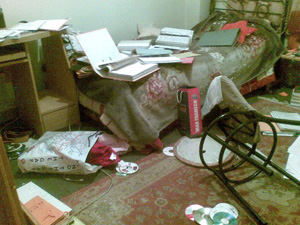

|
|

ماموران با توهين، تهديد و فحاشي همه وسايل خانه را به هم ريختند
تفتيش خشونت آمیز منزل نفيسه آزاد
سه شنبه15 بهمن 1387
تغيير براي برابري: ماموران دادسراي ويژه امينت دادگاه عمومي و انقلاب تهران ظهر امروز با هجوم به منزل نفيسه آزاد وسایل شخصی وی و همخانه های او را با خود برده اند. طی این تفتیش وحید ملکی (همسر نفیسه) و الناز انصاری، دیگر عضو کمپین یک میلیون امضا مورد ضرب وشتم قرار گرفتند و در مدت تفتیش منزل بر دست های وحید ملکی دستبند زدند.
نفیسه دانشجواست و به همراه دوتن از دوستانش در تهران زندگی می کند و همسر او برای پی گیری وضعیت بازداشت نفیسه از اصفهان به تهران آمده است. او از جمعه 11 بهمن در بازداشتگاه وزرا بسر مي برد. طی این تفتیش خشونت آمیز ماموران که سه تن بودند بخشی از وسایل شخصی نفیسه آزاد و همچنین لب تاب و جزوه های کاری الناز انصاری و آیدا سعادت را با خود بردند. نفیسه آزاد با این دو عضو کمپین در یک خانه
زندگی می کند.

مقاومت الناز انصاری برای عدم تفتیش لوازم و ضبط لب تاب وی با کتک کاری ماموران همراه شد و ماموران به زور این وسایل را با خود بردند. دخالت آقای ملکی برای ممانعت از کتک زدن الناز انصاری نیز منجر به ضرب و جرح وی شد که ماموران در خانه همسرش به او دستبند زدند.
لازم به ذکر است که در حکم تفتیش به صراحت اعلام شده بود تفتیش وسایل مربوط به نفیسه آزاد در رابطه با کمپین قابل بازرسی است.
از جمله مواردی که ارتباط به حکم نداشت ولی ضبط شد تعداد زیادی فیلم، کتاب، دفترچه های یادداشت شخصی و جزوه های کاری دیگر همخانه های نفیسه بود.
الناز انصاري در اين باره مي گويد:« وقتي ماموران به منزل مراجعه كردند به آنان توضيح دادم كه نفيسه همخانه من و آيدا سعادت است و چون آنها فقط حكم تفتيش وسايل نفيسه آزاد را همراه داشتند، همسر نفيسه اتاق و وسايل مربوط به نفيسه را به آنان نشان داد. در هنگام تفتيش منزل، زنگ موبايلم به صدا در آمد و وقتي مشغول پاسخگويي بودم يكي از ماموران خواست كه تلفن را قطع كنم. وقتي از اين كار امتناع كردم با تهديد به سمت من حمله كردند و در اين هنگام همسر نفيسه وارد ماجرا شد كه ماموران به او حمله كردند و با زد و خورد به وي دستنبد زدند.»
الناز انصاري ادامه مي دهد:« آنان سپس موبايلم را با زور و كتك گرفتند و بعد از آن لپ تاب من را هم با كتك و درگيري گرفتند. اصرارم مبني بر اين كه لپ تاب متعلق به من است و نشان دادن فايل هاي ذخيره شده كه همه به نام خودم بود فايده اي نداشت. اصرار من بر این مبنا بود که نام من و آیدا در حکم نبود و خواستار ارائه حکم برای وسایل خود بودم. در طول راه نیز همسر نفیسه جریان را به آنها گفته بود و آنها گفته بودند فقط وسایل نفیسه را بازرسی می کنیم و چیزی را هم قرار نیست با خود ببریم. ماموران حتي در هنگام ضبط وسايل متعلق به من و آيدا، همچنان به كتك زدن همسر نفيسه كه دستبند به دست داشت ادامه مي دادند.»
وي مي گويد:«ماموران با توهين، تهديد و فحاشي همه وسايل خانه را به هم ريختند و تعداد زيادي دي وي دي، سي دي، نسخه هاي دستنويسي كه براي كار تايپ در منزل گرفته بودم و كيف هاي من و آيدا و نفيسه را هم با خود بردند در حالي كه در حكم نوشته بودند فقط وسايل و مدارك مربوط به كمپين بايد مورد تفتيش و ضبط قرار گيرد..»
دیگر رسانه ها
تفتيش خشونت آميز منزل نفيسه آزاد/کانون ره آورد
تفتیش منزل نفیسه آزاد عضو کمپین یک میلیون امضا/بامداد خبر
تفتيش خشونت آميز منزل نفيسه آزاد/گویانیوز
تفتیش خشونت آمیز منزل نفیسه آزاد/ خبرنامه امیرکبیر
تفتيش خشونت آمیز منزل نفيسه آزاد/پیک ایران
نفيسه آزاد از اعضای کمپين يک ميليون امضاء بازداشت شد/رادیو فردا
آزاد و دربند... /گورين ئهرا يهكسانی
نفیسه آزاد را فورا" آزاد کنید/عصرنو
نفیسه آزاد است حتی در بند / کمپین یک میلیون امضا در کرمان
سه عضو کمپین یک میلیون امضا بازداشت شدند، /گویا نیوز
دستگیری سه عضو کمپین یک میلیون امضا/رادیو زمانه
سه عضو کمپین یک میلیون امضاء در بازداشت بسر می برند
بازداشت و انتقال اعضای کمپین یک میلیون امضا به بازداشتگاه وزرا! /کمیته گزارشگران حقوق بشر
سه عضو کمپین یک میلیون امضا بازداشت شدند/خبرنامه امیرکبیر
سه عضو کمپین یک میلیون امضا بازداشت شدند/شبکه همبستگی زنان
سه عضو کمپین یک میلیون امضا بازداشت شدند /مدرسه فمنیستی
نفیسه آزاد و دوعضو دیگر کمپین یک میلیون امضا بازداشت شدند/کانون زنان ایرانی
سه عضو کمپین یک میلیون امضا بازداشت شدند/ایران پرس نیوز
سه عضو کمپین یک میلیون امضا بازداشت شدند /پیک ایران
بازداشت چند تن از اعضای کمپین تغیر برای برابری/مجموعه فعالان حقوق بشر
سه عضو کمپین یک میلیون امضا بازداشت شدند/عصر نو
سه عضو کمپین یک میلیون امضا بازداشت شدند/اخبار روز
سه عضو کمپین یک میلیون امضا در بام تهران بازداشت شدند/ادوار نیوز
سه عضو کمپین یک میلیون امضا بازداشت شدند/ره آورد
دستگیری چند تن دیگر از فعالان کمپین در تهران/ وبلاگ پرتو نوری علا